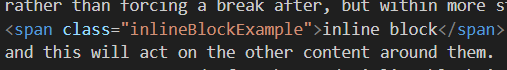

All Blocked Up?
What does it mean to display inline vs inline blocks?
Inline
To display inline means to display along side other elements/content, or within them without interrupting the flow of the elements. It is the default for a few common elements such as span, a, em, and strong. When elements are displayed inline they will ignore any margin applied to the top or bottom, and any height elements given, they do accept the padding given on top and bottom but it doesn't impact on the other elements around them. As you can see my code below for the word inline above is specifying its height, margin, and padding on each side. However, the margin is only applied to the left and right of the box. The padding is applied all around but it does not change where the words around it are, or the spacing of the lines, as you can see with the red line cutting through the words above above/below. It is also ignoring the height specification.
Inline Block
To display in inline block means to display alongside other elements rather than forcing a break after, but within more style-able blocks. When elements are displayed inline block they will follow any top and bottom margin and padding, and this will act on the other content around them. As you can see my code for the words inline block is specifying a margin, and padding on each side just like it was for inline above. But this time the content above(depending on your screen-size) and below is impacted and as a result the gap between the lines of text is larger than in other places. This is because rather than doing a more complicated wrapping involving just the spot "inline block" is, it impacts the whole lines more to make it easier to read and navigate.

Summary
In summary inline and inline block are pretty similar in that they allow content to appear along-side other content on a page. The main difference is that with inline block you have the ability to alter the margin on the top and bottom, and the height of the element. Inline is useful for when adding things within blocks of content, like links to other pages or places on a page for example. Where as inline block is great when you want to have elements on a page next to each other, or wrapping down a page, but also want to be able to style their top and bottom margin, padding, and their height.